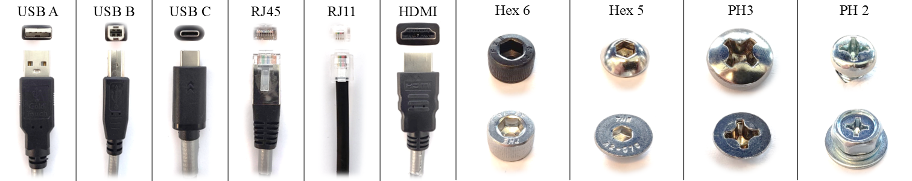
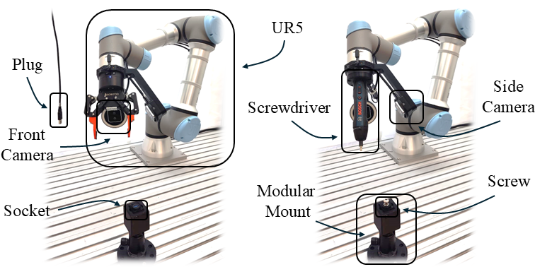

Method: IndustRoPose 6D Pose Tracker
The IndustRoPose real-time 6D pose tracking pipeline. An incoming RGB frame is segmented by SAM2, and the resulting mask is compared to a rendered mask from the previous pose. A mask-consistency score then triggers one of three modes: Track, Refine, or Recover using MegaPose. This adaptive approach ensures robust tracking at over 10 FPS by efficiently allocating computational resources.
IndustRobot: Modular Skill-Based Manipulation
Illustration of the modular, skill-based manipulation for USB A assembly. The task is decomposed into a sequence of adaptive robot skills: Move to Object (approach and align for grasp), Move Gripper (grasping action), Move Robot (repositioning with object in hand), Move Object to (transport and align the object to target location), and Insertion (precise, contact-rich insertion). The insets highlight the object's perspective and gripper action at each stage.
Transformer-based Insertion Policy
Architecture of the transformer-based policy for precision insertion. Dual ResNet18 encoders extract 2D feature maps from multi-camera inputs. The concatenated features, augmented with positional encoding, are processed by a Transformer Encoder to find cross-view correspondences. Finally, an MLP decoder regresses the 6-DOF pose correction required for alignment.
Experimental Results
We evaluated our framework on two real-world tasks: plug insertion and screw driving, using a diverse set of standard industrial and consumer components.
Test Cases
The set of connectors (USB, RJ45, HDMI) and screws (Hex, Phillips) used in our experiments.
Experimental Setup
Experimental setups for Plug Insertion (left) and Screw/Unscrew (right) using a UR5e arm, dual RealSense cameras, and task-specific end-effectors.
Success Rates
We achieved high success rates across all stages. For plug assembly, the full pipeline success rate was 96.67%. For the screwing task, the full pipeline success rate was 97.50%, validating the robustness and modularity of our approach.